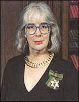
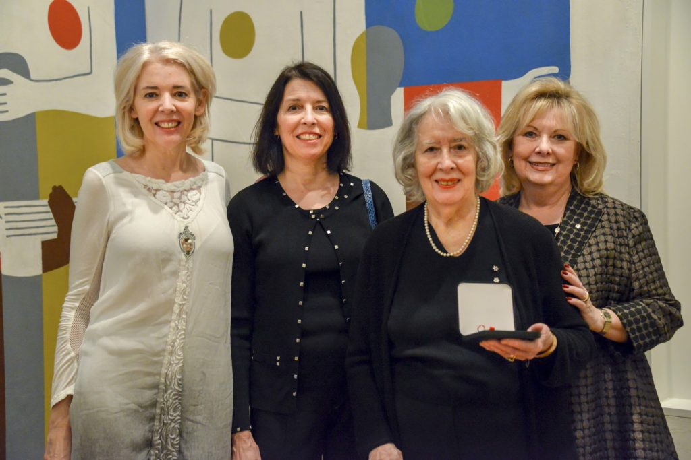

About Dorothy Knowles
Dorothy Knowles was born in Unity, Saskatchewan on April 7, 1927. Knowles studied biology at the University of Saskatchewan (U of S) from 1944 to 1948. After graduating Knowles took a six week summer course at Emma Lake. At this course Dorothy found her love for painting and the love of her life William Perehudoff an abstract painter. She then started her career painting. In 1951 she traveled to the Goldsmith school of art in London England where she found out it is important to work directly from nature. Dorothy Knowles took this knowledge and she paints the landscapes outside of her home. In 1987 Dorothy Knowles was awarded the Merit of Saskatchewan. In 2004 she was given the order of Canada.

a young Dorothy Knowles
|
Dreams |
Afternoon |
|---|